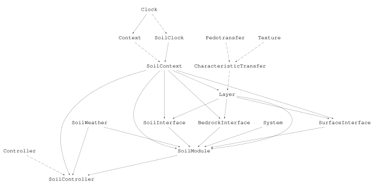
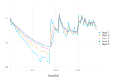

Soil Water Transport
Cropbox's framework tests contain a self-contained layered soil-water model in test/examples/soil.jl. This tutorial runs that implementation directly. The goal is to understand how the profile is divided into layers, how soil properties are estimated, and how water moves through the resulting system.
The example follows the structure of Teh's PyWaterBal materials. Its characteristic pedotransfer equations cite Saxton and Rawls (2006). It belongs to the Cropbox test suite rather than to a separately supported soil-model package, so treat it as an executable framework example.
Load the test model
The documentation uses the module portion of the test file itself. This keeps the tutorial tied to the implementation exercised by the current test suite.
using Cropbox
using DataFrames
soil_source = joinpath(pkgdir(Cropbox), "test", "examples", "soil.jl")
nothingThe main systems are:
| System | Role |
|---|---|
Texture | sand S, clay C, and organic matter OM |
CharacteristicTransfer | water-retention and conductivity properties estimated from texture |
Layer | storage, volumetric water content, hydraulic heads, and root-zone terms for one layer |
SurfaceInterface | precipitation, evaporation, and root extraction at the upper boundary |
SoilInterface | water flux between adjacent layers |
BedrockInterface | lower-boundary drainage |
SoilModule | creates the profile and connects all interfaces |
SoilController | joins weather input, soil context, and the executable root |
The actual type hierarchy can be inspected directly:
Cropbox.hierarchy(SoilWater.SoilController; skipcontext = true)
Divide the profile into layers
The test implementation creates five layers. Each is 0.2 m thick, so their midpoint depths are 0.1, 0.3, 0.5, 0.7, and 0.9 m.
soil_data = joinpath(
dirname(soil_source),
"data", "soil", "PyWaterBal.csv",
)
config = @config (
Clock => :step => 1u"d",
SoilWater.SoilClock => :step => 15u"minute",
SoilWater.SoilWeather => :store => soil_data,
)
model = instance(SoilWater.SoilController; config)
layers = model.s.L
DataFrame(
layer = [l.i' for l in layers],
depth = [l.z' for l in layers],
thickness = [l.s' for l in layers],
initial_vwc = [l.θ' for l in layers],
)| Row | layer | depth | thickness | initial_vwc |
|---|---|---|---|---|
| Int64 | Quantity… | Quantity… | Float64 | |
| 1 | 1 | 0.1 m | 0.2 m | 0.4 |
| 2 | 2 | 0.3 m | 0.2 m | 0.4 |
| 3 | 3 | 0.5 m | 0.2 m | 0.4 |
| 4 | 4 | 0.7 m | 0.2 m | 0.4 |
| 5 | 5 | 0.9 m | 0.2 m | 0.4 |
Each layer stores water depth as 𝚯 and derives volumetric water content θ from storage and thickness. The root-zone quantities 𝚯_r, 𝚯_r_wp, 𝚯_r_fc, and 𝚯_r_sat include only the fraction of a layer reached by the current rooting depth d_r.
All five layers currently inherit the same default Texture. The source notes layer-specific texture as future work, so this example demonstrates layered transport but not a heterogeneous measured soil profile.
Estimate hydraulic properties with a PTF
A pedotransfer function (PTF) estimates hydraulic properties from easier-to- obtain soil descriptors. Here the inputs S, C, and OM feed the CharacteristicTransfer system:
\[(S,\ C,\ OM) \longrightarrow (\theta_{wp},\ \theta_{fc},\ \theta_{sat},\ K_s,\ K(\theta),\ \Psi(\theta)).\]
In code, θ_wp, θ_fc, and θ_sat are the volumetric water contents at wilting point, field capacity, and saturation. K_s is saturated hydraulic conductivity; the callable variables K_at and Ψ_at evaluate conductivity and matric tension at a supplied water content.
top = first(layers)
(
θ_wp = round(top.θ_wp'; digits = 3),
θ_fc = round(top.θ_fc'; digits = 3),
θ_sat = round(top.θ_sat'; digits = 3),
K_s = round(typeof(1.0u"mm/hr"), top.K_s'; digits = 3),
)(θ_wp = 0.192, θ_fc = 0.332, θ_sat = 0.429, K_s = 2.439 mm hr^-1)These values come from the default texture in the test model: sand fraction S = 0.29, clay fraction C = 0.32, and organic matter OM = 1.5%.
Connect storage and fluxes
For a layer, net flux q̂ is incoming flux qi minus outgoing flux qo. accumulate integrates that rate into stored water depth 𝚯. An internal SoilInterface calculates the flux between adjacent layers from mean conductivity, total-head difference, layer spacing, and root extraction:
\[q_i = \bar{K}_i \frac{\Delta H_i}{\Delta z_i} - T_a(\phi_{i+1} - \phi_i).\]
The surface interface supplies rainfall and removes actual evaporation and transpiration. The bedrock interface uses the conductivity of the last layer as the lower-boundary outflow. The interfaces write matching qi and qo values into their neighboring layers, making the direction of each transfer explicit.
Run the test scenario
The test selects the volumetric water content of all five layers with indexed paths.
result = simulate(SoilWater.SoilController;
config,
stop = 80u"d",
target = (
:v1 => "s.L[1].θ",
:v2 => "s.L[2].θ",
:v3 => "s.L[3].θ",
:v4 => "s.L[4].θ",
:v5 => "s.L[5].θ",
),
)
(rows = nrow(result), final = last(result))(rows = 81, final = DataFrameRow
Row │ time v1 v2 v3 v4 v5
│ Quantity… Float64 Float64 Float64 Float64 Float64
─────┼──────────────────────────────────────────────────────────────
81 │ 1920//1 hr 0.353363 0.358152 0.362862 0.365863 0.367437)visualize(result,
:time,
[:v1, :v2, :v3, :v4, :v5];
names = ["Layer 1", "Layer 2", "Layer 3", "Layer 4", "Layer 5"],
ylim = (0.2, 0.45),
kind = :line,
)
The upper layers respond first and most strongly to atmospheric input and root extraction. Differences propagate downward through the interface fluxes rather than through a single profile-wide storage variable.
Scope and current limitations
This example is valuable because it exercises advanced framework patterns:
- a custom
ContextandClock; - nested vectors of child systems;
- callable PTF relationships;
refstates written by interfaces;accumulatefor layer storage; and- indexed output paths such as
"s.L[3].θ".
It is still a test and implementation study. The source contains provisional bounds, notes about layer-specific texture, and a TODO for complete sub-time- step advancement. The test configures a daily outer Clock and a 15-minute SoilClock, but that setting should not be presented as a finished numerical substepping scheme until the TODO is resolved. Validate units, boundaries, time-step behavior, and layer-wise mass balance before adapting it for research.
For a compact crop model in which soil water is only one coupled component, return to the SimpleCrop tutorial.